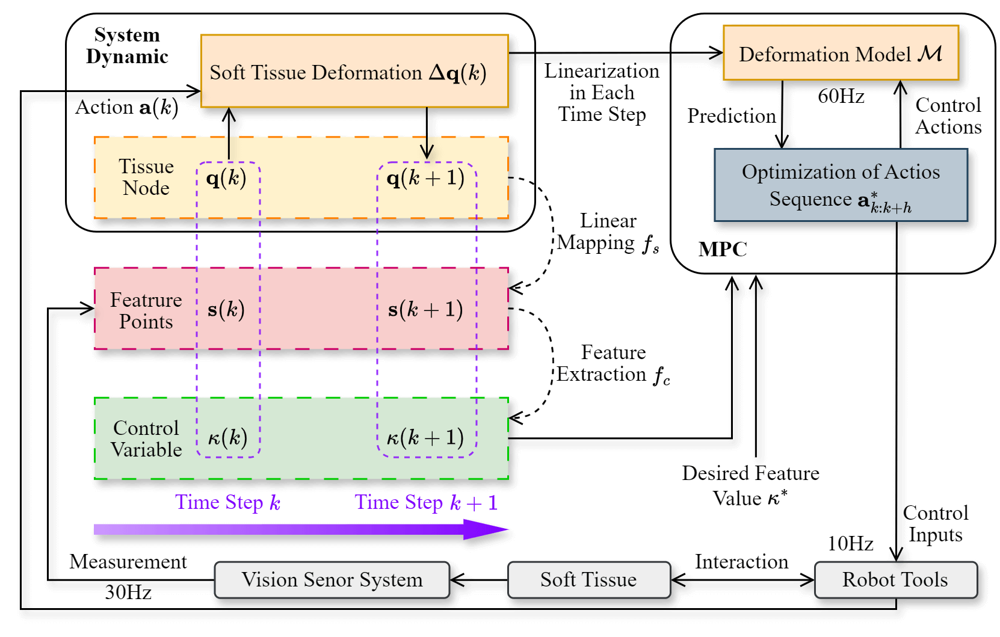

Paper Title
ABSTACT
Robotic soft tissue manipulation in surgery presents significant challenges due to the tissue’s high deformability and the spatial constraints of the surgical environment. To address these challenges, we propose a novel framework that combines a deformation model-based shape controller with an analytical approach for contact point selection, employing manipulability-based affordance evaluation. Unlike data-driven affordance methods, our approach leverages the deformation Jacobian matrix derived from a linearized deformation model to evaluate the manipulability of candidate contact points under specified contact conditions, providing a robust and analytical solution for affordance estimation in soft tissue manipulation. For deformation control, we employ a differentiable deformation model based on Projective Dynamics (PD) to efficiently compute forward and backward deformation processes in real-time. Point-based visual features are constructed to represent and track the desired tissue deformation, enabling precise manipulation through visual feedback. The proposed framework has been validated through simulations and physical experiments. These results demonstrate the desired deformation effects and a strong correlation between the predicted affordance and the observed manipulation efficiency, confirming the effectiveness of our approach in soft tissue deformation control and affordance estimation.
METHOD
